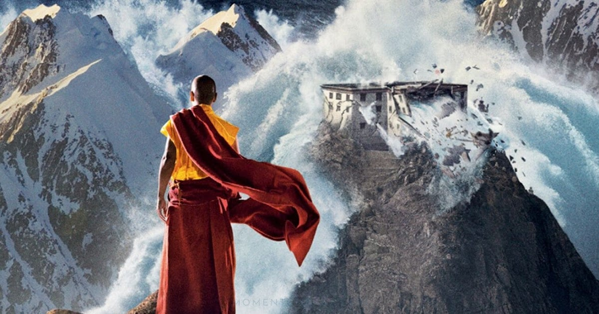
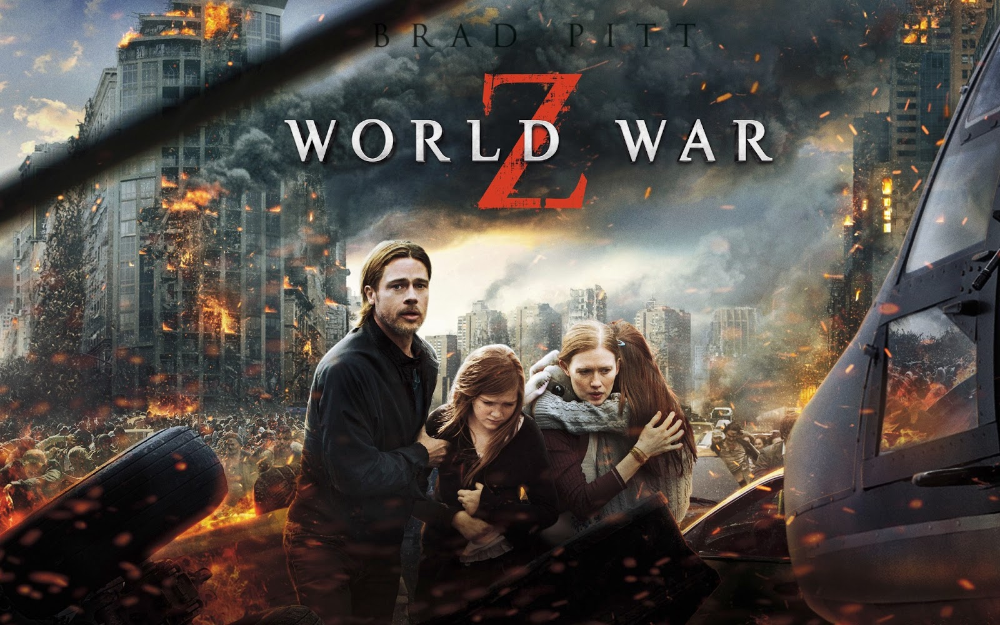
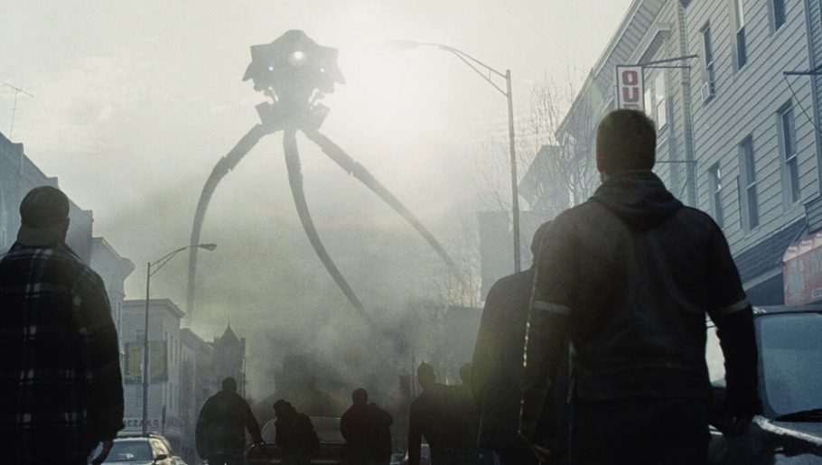

Top 3 filmes que eram meus favoritos quando criança
Os 3 filmes que eu não conseguia parar de assistir quando era criança :)
2012 (2009)
Sinopse: Em 2012, eventos catastróficos ameaçam destruir o planeta, confirmando uma antiga profecia maia. Enquanto os governos mundiais tentam salvar a humanidade e o globo cai em ruínas, um homem entra em ação e faz de tudo para salvar sua família.

Esse filme foi um dos meus maiores hiperfocos de quando eu era criança. Eu gosto muito de filmes de ficção-científica sobre apocalipse e o planeta terra então eu gostei muito dele e já assisti mais de 100 vezes.
Guerra Mundial Z (2013)
Sinopse: Um vírus letal se espalha rapidamente e transforma seres humanos em zumbis. O ex-agente da ONU Gerry Lane é chamado para investigar a epidemia que está acabando com a humanidade, iniciando uma verdadeira corrida contra o tempo.

Eu amo filmes de zumbi e esse é provavelmente meu preferido. Tem muitas cenas legais e emocionantes e a maiora dos filmes de zumbi a história leva anos para achar uma cura, mas esse não teve.
Guerra dos Mundos (2005)
Sinopse: Ray Ferrier é um estivador divorciado, afastado de seus filhos, que vivem com a mãe. Quando sua ex-esposa deixa as crianças para ele cuidar durante alguns dias, o planeta é atacado por alienígenas que surgem do chão conduzindo tripods e destruindo tudo que encontram pelo caminho. Ray tenta proteger os seus filhos e fugir para Boston para se juntar a sua ex-esposa. Durante o trajeto, enfrenta várias adversidades e ataques.

Esse foi outro filme que eu assisti muitas vezes e nunca fiquei entediado, mas todas as vezes que escuto um som parecido com o que os alien fazem no filme eu me assusto... xD.